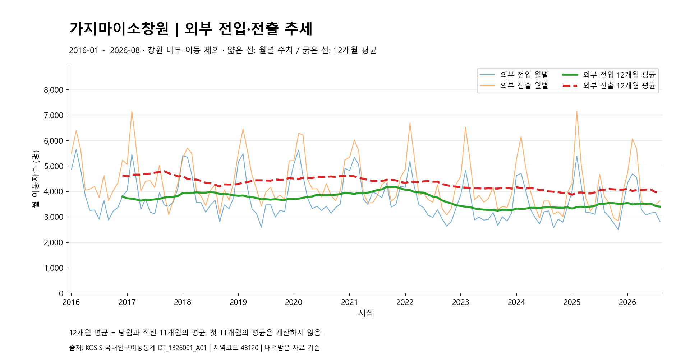
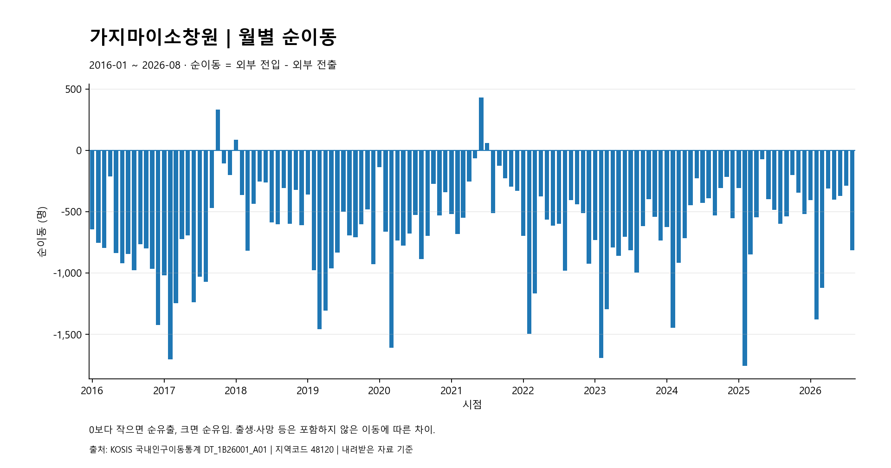
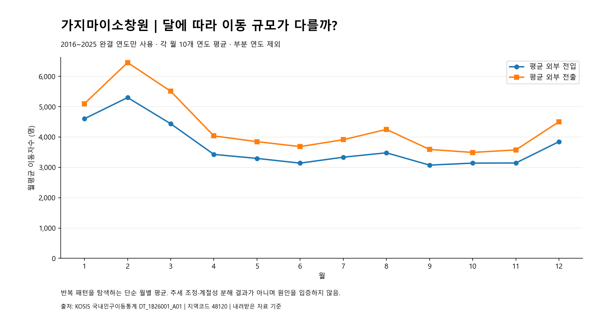

“들어온 사람을
어떻게 도울 것인가?”
창원 전입자의 초기 정착 지원을 다룬 프로젝트
창원시 인구이동 추세 분석과
정착 지원 시사점
창원시의 전입·전출 데이터를 분석해
장기적인 이동 흐름과 월별 패턴을 살펴본 데이터 분석 프로젝트
「오이소창원」의 초기 정착 지원이라는 문제의식을
실제 인구이동 흐름을 확인하는 후속 분석으로 이어갔습니다.
창원 전입자의 초기 정착 지원을 다룬 프로젝트
서비스 아이디어에서 나아가 실제 데이터로 흐름을 확인하는 분석
문제가 있다는 결론을 미리 정하지 않았습니다. 전입·전출에 어떤 패턴이 있는지 검증하는 것이 이번 분석의 목적입니다.
DT_1B26001_A012026년은 8월까지의 부분 연도입니다. 다른 해 전체 누계와 직접 비교하지 않습니다. 페이지는 프로젝트에 저장된 자료를 기준으로 합니다.
이동의 규모와 차이를 구분하면
숫자가 말하는 범위가 분명해집니다.
원본에서 보고서까지, 검증을 거쳐 해석으로 이어지는 흐름입니다.
경남 내 다른 시군 → 창원
다른 시도 → 창원
총전입 − 창원 내부 이동창원 → 경남 내 다른 시군
창원 → 다른 시도
총전출 − 창원 내부 이동외부 전입
− 외부 전출
당월과 직전 11개월을 평균해 월별 급등락보다 완만한 흐름을 확인합니다.
최초 11개월은 계산 기간이 부족해 비워 둡니다. 원자료 결측이 아닙니다.
2016~2025년의 같은 달끼리 평균합니다. 각 달에 완결된 10개 연도가 동일하게 기여합니다.
부분 연도인 2026년은 제외합니다. 엄밀한 계절성 분해는 아닙니다.
기존 분석 결과의 세 그래프입니다.
사실에서 해석으로, 해석에서 검토할 행동으로 구분해 읽습니다.
월별 이동 규모와 후행 12개월 평균을 나란히 봅니다.

2016년 12월 → 2025년 12월의 12개월 평균은 외부 전입 3,796.9 → 3,517.5명, 외부 전출 4,625.5 → 4,068.8명입니다.
전입과 전출이 함께 달라집니다. 전출 감소만으로 정착 상황이 개선됐다고 판단하기는 어렵습니다.
외부 전입·전출·순이동을 함께 점검하는 기준으로 정착 지원의 배경을 살펴볼 수 있습니다.
0선을 기준으로 순유입과 순유출의 크기를 확인합니다.

최대 순유출 · 2025.02−1,756명
최대 순유입 · 2021.06+430명
2025년 2월은 외부 전입 5,388명, 외부 전출 7,144명입니다. 2021년 6월에는 +430명의 순유입이 관측됐습니다.
일부 월의 순유입이나 큰 순유출 한 번만으로 지속적인 반전 또는 특정 정책의 성패를 설명할 수 없습니다.
한 달의 증감보다 이후 흐름을 함께 확인합니다. 정착 지속 여부에는 별도의 추적 자료가 필요합니다.
2016~2025년, 같은 달의 평균 이동 규모를 비교합니다.

2월 평균 외부 전입은 5,300.4명, 외부 전출은 6,454.0명으로 각각 가장 높습니다. 평균 순이동은 −1,153.6명입니다.
평균에서는 2월에 큰 이동 규모가 보입니다. 매년 같은 패턴이 나타난다는 보장이나 이동 원인의 증거는 아닙니다.
2월 이전의 정보 점검과 수요 조사 시점을 검토할 수 있습니다. 이동 규모와 서비스 수요는 구별해야 합니다.
평균은 소수점 첫째 자리로 표시했습니다. 기존 REPORT.md와 월별 계산값 · 달별 평균값에서 근거를 확인할 수 있습니다.
실행 로그에 남아 있는 확인과 수정의 기록입니다.
원본에는 경상남도 전체와 통합 전 지역 행도 있습니다. 이름만 보고 선택하지 않고 통합 창원시 48120을 확인했습니다.
지역 선택 기준부터 검증상위 폴더에서는 실행 파일을 찾지 못했습니다. 하위 프로젝트 위치를 확인하고 기존 가상환경의 Python을 재사용했습니다.
경로와 실행 환경을 함께 확인Windows에서 저장 오류가 발생했습니다. 파일 접근을 확인한 뒤 재실행해 성공했으며, 정확한 OS 오류 원인은 미확정입니다.
존재 여부보다 실행·갱신·읽기 검증Git에 추적되던 .venv 파일 4,240개와 글꼴 캐시를 추적에서 제거하고 .gitignore를 보완했습니다. 로컬 환경은 보존했습니다.
재현에 필요한 파일과 환경을 구분데이터 기준, 실행환경, 경로, 버전 관리까지. 분석 결과를 설명하려면 그 결과가 만들어진 과정도 확인할 수 있어야 했습니다.
수집부터 설명까지,
역할을 구분해 사용했습니다.
관찰된 흐름과 아직 설명할 수 없는 것을 구분합니다.
국내 인구이동 자료만으로 왜 이동했는지 알 수 없습니다.
전출자를 동일 개인 기준으로 추적한 자료가 아니므로 재전출률·정착 기간을 알 수 없습니다.
청년 연령대만 따로 분리한 데이터가 아닙니다.
외국인 이동 통계는 포함되지 않습니다.
출생·사망에 따른 변화는 분석에 포함하지 않았습니다.
2026년은 8월까지의 부분 연도입니다.
월별 평균은 추세를 제거한 계절성 분해나 통계적 유의성 검정이 아닙니다.
오이소창원전입자의 초기 정착 지원
가지마이소창원창원 인구이동 흐름의 데이터 기반 분석
비공개 저장소입니다. GitHub 링크는 저장소 접근 권한이 있는 계정으로 로그인해야 열립니다.